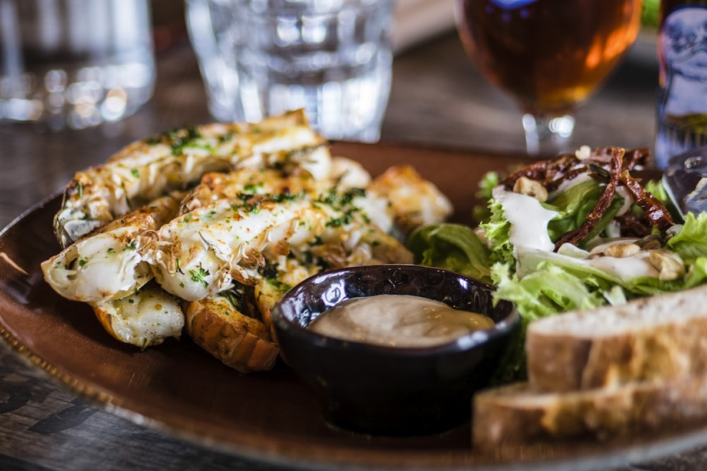
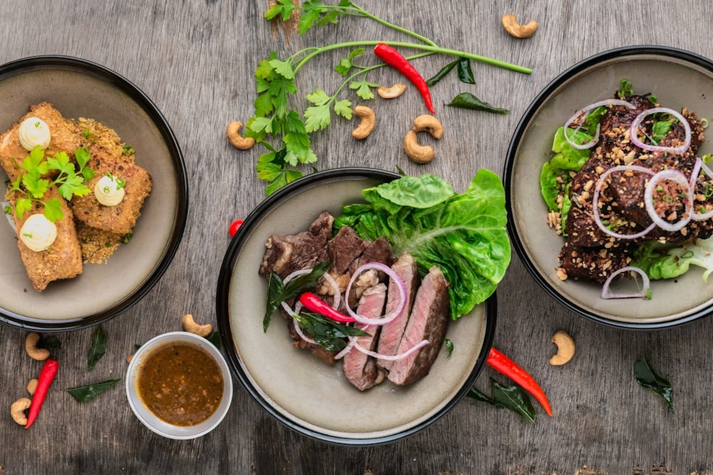
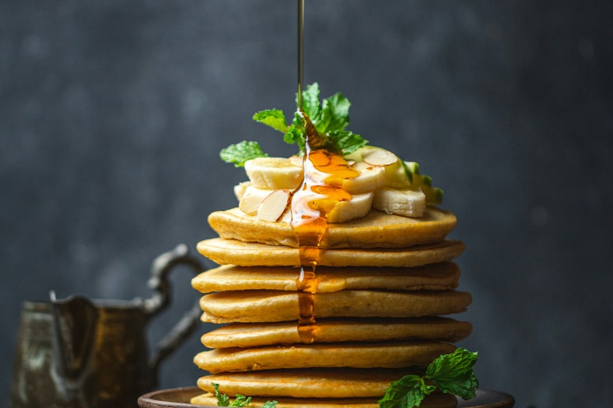

190 S LaSalle Street, Suite 2800, Chicago, IL 60603, United States
+1-877-667-7705
Founded on the belief that culinary art begins with direct soil custody, APRICOT VELVET operates from our corporate suite at 190 S LaSalle Street, Suite 2800, Chicago, IL 60603, United States while maintaining close alliances with multi-generational orchard stewards.
Our founders rejected industrial mass-production shortcuts, choosing instead to master the temperamental dynamics of French hammered copper cauldrons and raw natural sucrose crystallization.

How our daily workshop operations honor the integrity of stone fruit terroir.

Every small-batch confiture is calibrated for culinary versatility, performing effortlessly on breakfast pastries, roasted poultry reductions, and aged farmstead cheeses.

We forbid rapid-boiling vacuum chambers. Our preserves simmer openly under atmospheric conditions to ensure delicate flower aromas never escape into condensate traps.
Sweetness is achieved using pure raw wildflower honey and raw cane turbinado, providing subtle herbal undertones that synthetic refined corn syrups can never match.